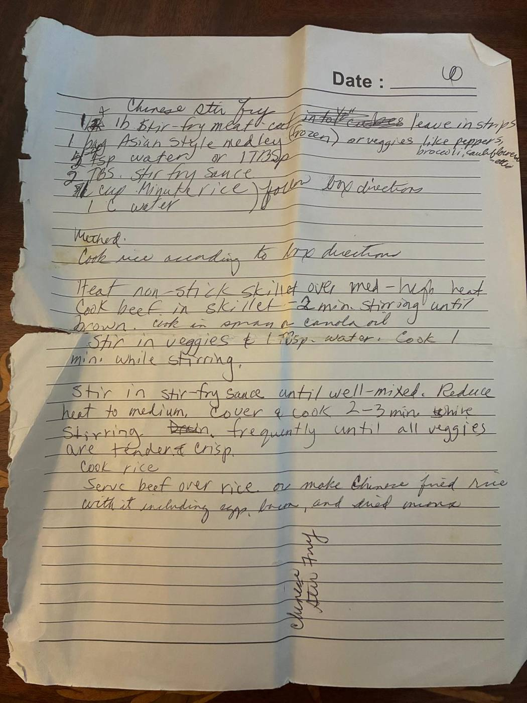

Mains
Chinese Stir Fry
From the kitchen of Mom
CookStovetop, medium-high
ServeOver rice

Mom's original card · tap to enlarge
Ingredients
Stir fry
Rice
Method tap a step to mark it done
- Cook the rice according to the box directions.
- Heat a non-stick skillet over medium-high heat with cooking spray or canola oil.
- Cook the beef in the skillet for 2 minutes, stirring, until browned.
- Stir in the veggies and 1 tbsp water. Cook 1 minute while stirring.
- Stir in the stir-fry sauce until well mixed. Reduce the heat to medium, cover and cook 2–3 minutes, stirring frequently, until all the veggies are tender-crisp.
- Serve the beef over the rice.